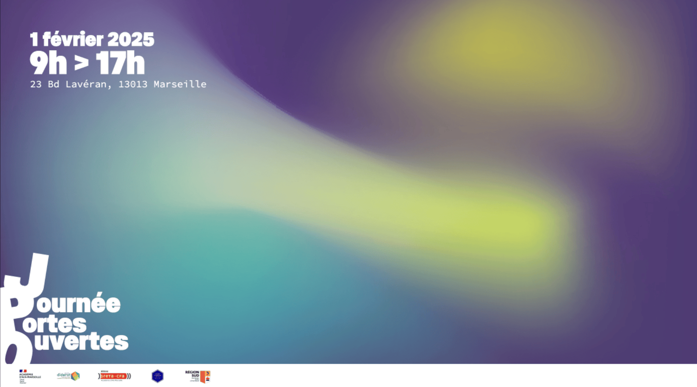
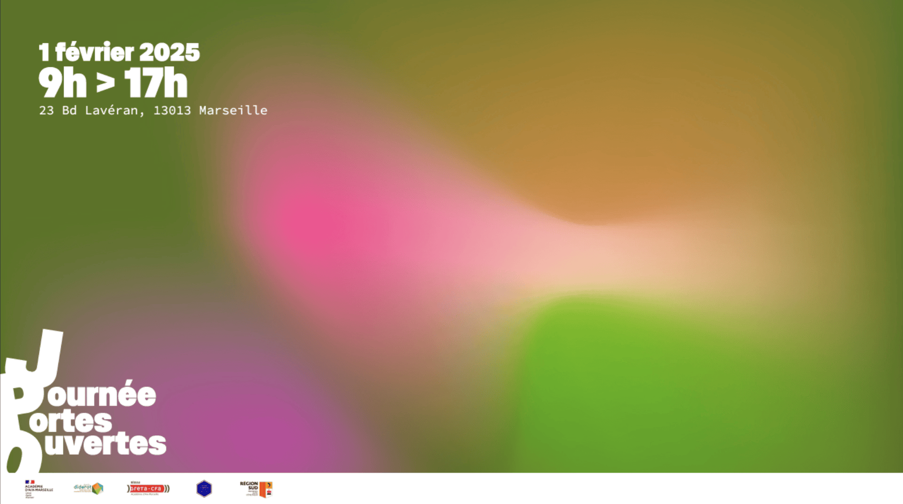
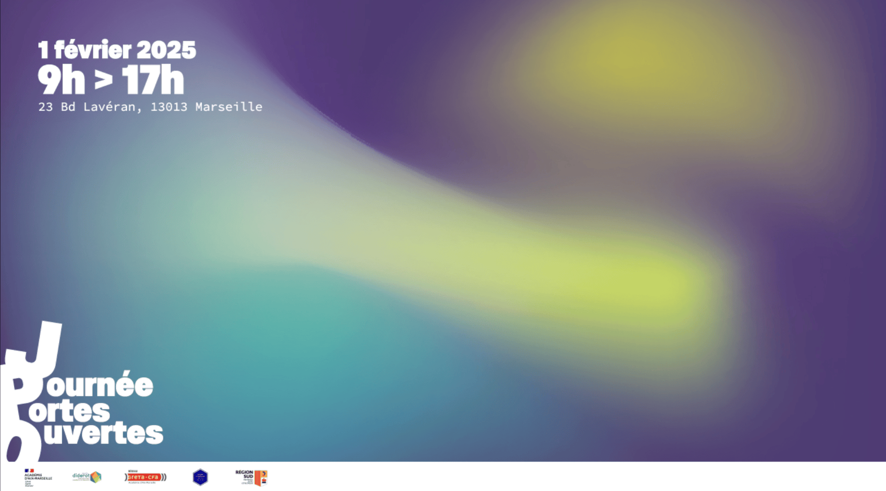
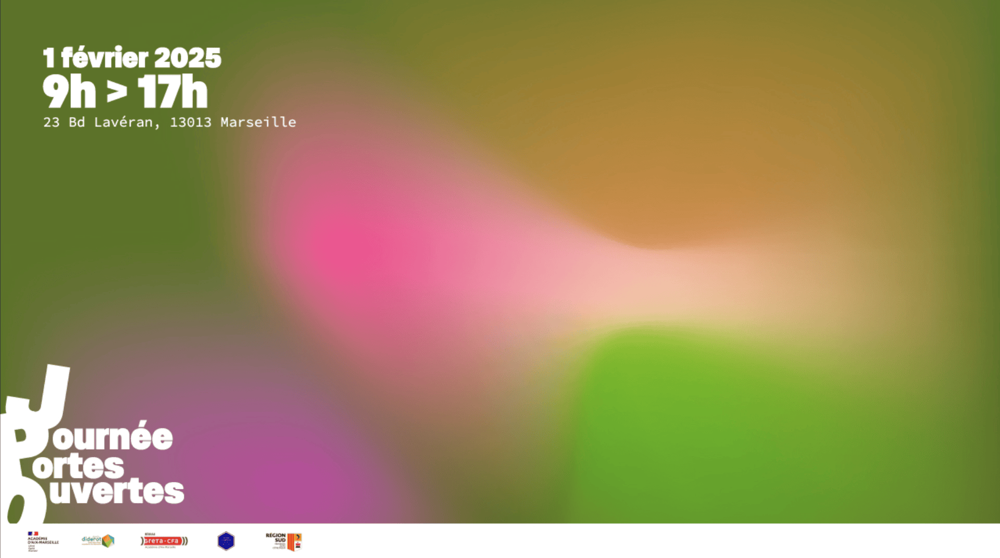

Logotype de l’établissement
Les supports
 



L’identité visuelle s’appuie sur un jeu de formes fluides et de dégradés colorés pour évoquer le mouvement constant qui anime l’établissement. Avec son grand nombre d’élèves et la diversité de ses parcours, l’école est un lieu vivant et en perpétuelle effervescence. Ce traitement graphique traduit cette dynamique tout en créant une ambiance accueillante et contemporaine, en accord avec l’esprit des Journées portes ouvertes.